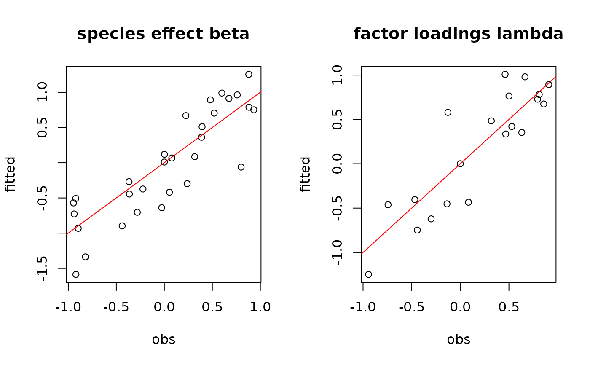
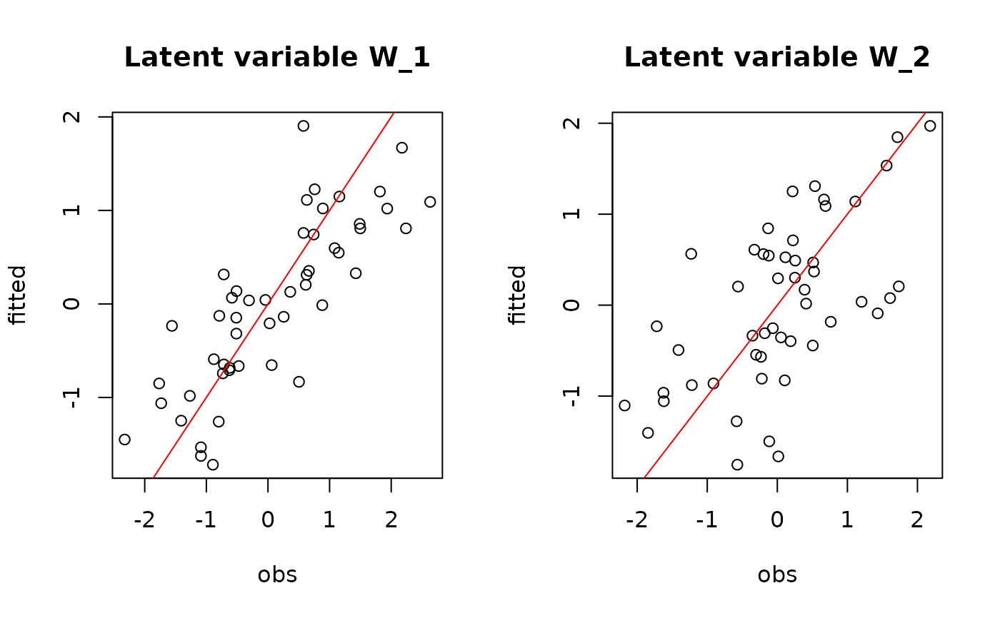
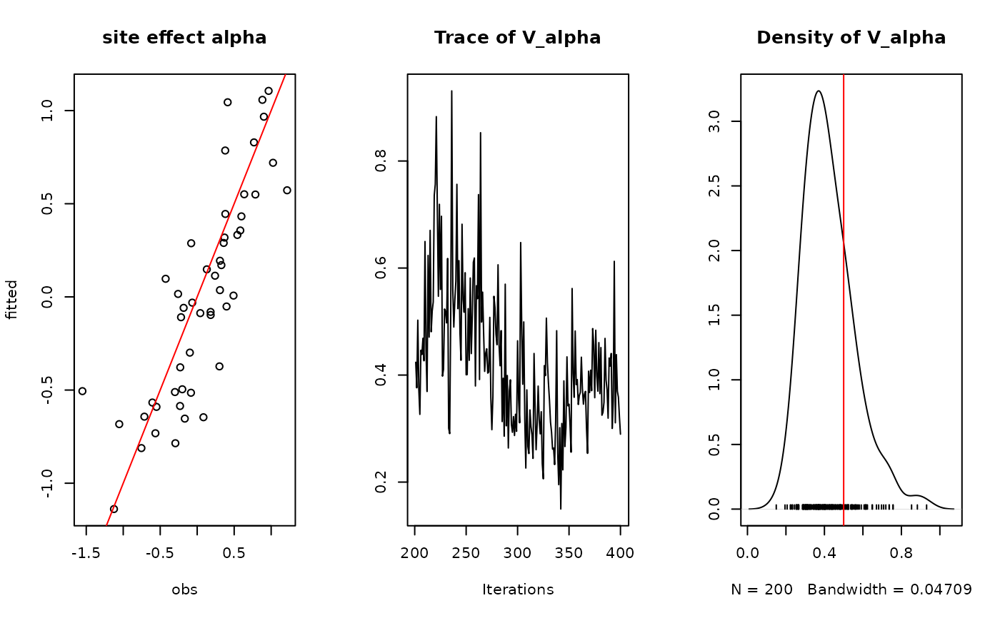
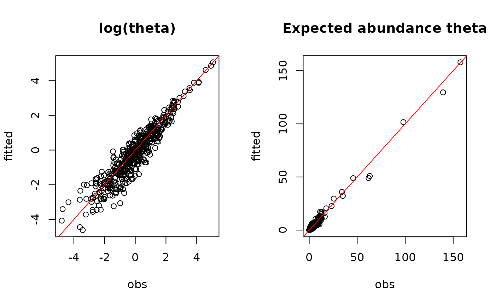

The jSDM_poisson_log function performs a Poisson regression with log link function in a Bayesian framework.
The function calls a Gibbs sampler written in C++ code which uses an adaptive Metropolis algorithm to estimate the conditional posterior distribution of model's parameters.
jSDM_poisson_log( burnin = 5000, mcmc = 10000, thin = 10, presence_site_sp, site_suitability, site_data, n_latent = 0, site_effect = "none", beta_start = 0, lambda_start = 0, W_start = 0, alpha_start = 0, V_alpha = 1, shape = 0.5, rate = 5e-04, mu_beta = 0, V_beta = 1e+06, mu_lambda = 0, V_lambda = 10, ropt = 0.44, seed = 1234, verbose = 1 )
| burnin | The number of burnin iterations for the sampler. |
|---|---|
| mcmc | The number of Gibbs iterations for the sampler. Total number of Gibbs iterations is equal to |
| thin | The thinning interval used in the simulation. The number of mcmc iterations must be divisible by this value. |
| presence_site_sp | A vector indicating the number of successes (or presences) and the absence by a zero for each species at studied sites. |
| site_suitability | A one-sided formula of the form '~x1+...+xp' with p terms specifying the explicative variables for the suitability process of the model. |
| site_data | data frame containing the model's explicative variables. |
| n_latent | An integer which specifies the number of latent variables to generate. Defaults to |
| site_effect | A string indicating whether row effects are included as fixed effects ( |
| beta_start | Starting values for beta parameters of the suitability process for each species must be either a scalar or a \(p \times n_{species}\) matrix.
If |
| lambda_start | Starting values for lambda parameters corresponding to the latent variables for each species must be either a scalar or a \(n_{latent} \times n_{species}\) upper triangular matrix with strictly positive values on the diagonal, ignored if |
| W_start | Starting values for latent variables must be either a scalar or a \(nsite \times n_latent\) matrix, ignored if |
| alpha_start | Starting values for random site effect parameters must be either a scalar or a nsite-length vector, ignored if |
| V_alpha | Starting value for variance of random site effect if |
| shape | Shape parameter of the Inverse-Gamma prior for the random site effect variance |
| rate | Rate parameter of the Inverse-Gamma prior for the random site effect variance |
| mu_beta | Means of the Normal priors for the \(\beta\) parameters of the suitability process.
|
| V_beta | Variances of the Normal priors for the \(\beta\) parameters of the suitability process. |
| mu_lambda | Means of the Normal priors for the \(\lambda\) parameters corresponding to the latent variables, ignored if |
| V_lambda | Variances of the Normal priors for the \(\lambda\) parameters corresponding to the latent variables, ignored if |
| ropt | Target acceptance rate for the adaptive Metropolis algorithm. Default to 0.44. |
| seed | The seed for the random number generator. Default to 1234. |
| verbose | A switch (0,1) which determines whether or not the progress of the sampler is printed to the screen. Default is 1: a progress bar is printed, indicating the step (in %) reached by the Gibbs sampler. |
An object of class "jSDM" acting like a list including :
| mcmc.alpha | An mcmc object that contains the posterior samples for site effects \(\alpha_i\), not returned if site_effect="none". |
| mcmc.V_alpha | An mcmc object that contains the posterior samples for variance of random site effect, not returned if site_effect="none" or site_effect="fixed". |
| mcmc.latent | A list by latent variable of mcmc objects that contains the posterior samples for latent variables \(W_l\) with \(l=1,\ldots,n_{latent}\), not returned if n_latent=0. |
| mcmc.sp | A list by species of mcmc objects that contains the posterior samples for species effects \(\beta_j\) and \(\lambda_j\) if n_latent>0. |
| mcmc.Deviance | The posterior sample of the deviance \(D\), with \(D=-2\log(\prod_{ij} P(y_{ij}|\beta_j,\lambda_j, \alpha_i, W_i))\), is also provided. |
| theta_latent | Predictive posterior mean of the probability associated to the suitability process for each observation. |
| model_spec | Various attributes of the model fitted, including the response and model matrix used, distributional assumptions as link function, family and number of latent variables, hyperparameters used in the Bayesian estimation and mcmc, burnin and thin. |
The mcmc. objects can be summarized by functions provided by the coda package.
We model an ecological process where the presence or absence of species \(j\) on site \(i\) is explained by habitat suitability.
Ecological process : $$y_{ij} \sim \mathcal{P}oisson(\theta_{ij})$$ where
if n_latent=0 and site_effect="none" | log\((\theta_{ij}) = \beta_{0j} + X_i \beta_j\) |
if n_latent>0 and site_effect="none" | log\((\theta_{ij}) = \beta_{0j} + X_i \beta_j + W_i \lambda_j\) |
if n_latent=0 and site_effect="fixed" | log\((\theta_{ij}) = \beta_{0j} + X_i \beta_j + \alpha_i\) |
if n_latent>0 and site_effect="fixed" | log\((\theta_{ij}) = \beta_{0j} + X_i \beta_j + W_i \lambda_j + \alpha_i\) |
if n_latent=0 and site_effect="random" | log\((\theta_{ij}) = \beta_{0j} + X_i \beta_j + \alpha_i\) and \(\alpha_i \sim \mathcal{N}(0,V_\alpha)\) |
if n_latent>0 and site_effect="random" | log\((\theta_{ij}) = \beta_{0j} + X_i \beta_j + W_i \lambda_j + \alpha_i\) and \(\alpha_i \sim \mathcal{N}(0,V_\alpha)\) |
| Gelfand, A. E.; Schmidt, A. M.; Wu, S.; Silander, J. A.; Latimer, A. and Rebelo, A. G. (2005) Modelling species diversity through species level hierarchical modelling. Applied Statistics, 54, 1-20. |
| Latimer, A. M.; Wu, S. S.; Gelfand, A. E. and Silander, J. A. (2006) Building statistical models to analyze species distributions. Ecological Applications, 16, 33-50. |
| Ghislain Vieilledent <ghislain.vieilledent@cirad.fr> |
| Jeanne Clément <jeanne.clement16@laposte.net> |
#============================================== # jSDM_poisson_log () # Example with simulated data #============================================== #================= #== Load libraries library(jSDM) #================== #== Data simulation #= Number of sites nsite <- 60 #= Number of species nsp <- 20 #= Set seed for repeatability seed <- 1234 #= Ecological process (suitability) set.seed(seed) x1 <- rnorm(nsite,0,1) set.seed(2*seed) x2 <- rnorm(nsite,0,1) X <- cbind(rep(1,nsite),x1,x2) np <- ncol(X) set.seed(3*seed) W <- cbind(rnorm(nsite,0,1),rnorm(nsite,0,1)) n_latent <- ncol(W) l.zero <- 0 l.diag <- runif(2,0,1) l.other <- runif(nsp*2-3,-1,1) lambda.target <- matrix(c(l.diag[1],l.zero,l.other[1], l.diag[2],l.other[-1]), byrow=TRUE, nrow=nsp) beta.target <- matrix(runif(nsp*np,-1,1), byrow=TRUE, nrow=nsp) V_alpha.target <- 0.5 alpha.target <- rnorm(nsite,0,sqrt(V_alpha.target)) log.theta <- X %*% t(beta.target) + W %*% t(lambda.target) + alpha.target theta <- exp(log.theta) Y <- apply(theta, 2, rpois, n=nsite) #= Site-occupancy model # Increase number of iterations (burnin and mcmc) to get convergence mod <- jSDM_poisson_log(# Chains burnin=200, mcmc=200, thin=1, # Response variable presence_site_sp=Y, # Explanatory variables site_suitability=~x1+x2, site_data=X, n_latent=n_latent, site_effect="random", # Starting values beta_start=0, lambda_start=0, W_start=0, alpha_start=0, V_alpha=1, # Priors shape=0.5, rate=0.0005, mu_beta=0, V_beta=10, mu_lambda=0, V_lambda=10, # Various seed=1234, ropt=0.44, verbose=1)#> #> Running the Gibbs sampler. It may be long, please keep cool :) #> #> **********:10.0%, mean accept. rates= beta:0.152 lambda:0.136 W:0.329 alpha:0.217 #> **********:20.0%, mean accept. rates= beta:0.184 lambda:0.178 W:0.334 alpha:0.268 #> **********:30.0%, mean accept. rates= beta:0.275 lambda:0.259 W:0.352 alpha:0.352 #> **********:40.0%, mean accept. rates= beta:0.342 lambda:0.346 W:0.401 alpha:0.397 #> **********:50.0%, mean accept. rates= beta:0.398 lambda:0.408 W:0.422 alpha:0.409 #> **********:60.0%, mean accept. rates= beta:0.428 lambda:0.415 W:0.443 alpha:0.447 #> **********:70.0%, mean accept. rates= beta:0.444 lambda:0.432 W:0.459 alpha:0.455 #> **********:80.0%, mean accept. rates= beta:0.425 lambda:0.417 W:0.434 alpha:0.445 #> **********:90.0%, mean accept. rates= beta:0.437 lambda:0.438 W:0.440 alpha:0.444 #> **********:100.0%, mean accept. rates= beta:0.435 lambda:0.446 W:0.420 alpha:0.440#' #========== #' #== Outputs #= Parameter estimates ## beta_j # summary(mod$mcmc.sp$sp_1[,1:ncol(X)]) mean_beta <- matrix(0,nsp,np) pdf(file=file.path(tempdir(), "Posteriors_beta_jSDM_log.pdf")) par(mfrow=c(ncol(X),2)) for (j in 1:nsp) { mean_beta[j,] <- apply(mod$mcmc.sp[[paste0("sp_",j)]][,1:ncol(X)], 2, mean) for (p in 1:ncol(X)) { coda::traceplot(coda::as.mcmc( mod$mcmc.sp[[paste0("sp_",j)]][,p])) coda::densplot(coda::as.mcmc( mod$mcmc.sp[[paste0("sp_",j)]][,p]), main = paste(colnames( mod$mcmc.sp[[paste0("sp_",j)]])[p], ", species : ",j)) abline(v=beta.target[j,p],col='red') } } dev.off()#> agg_png #> 2## lambda_j # summary(mod$mcmc.sp$sp_1[,(ncol(X)+1):(ncol(X)+n_latent)]) # summary(mod$mcmc.sp$sp_2[,(ncol(X)+1):(ncol(X)+n_latent)]) mean_lambda <- matrix(0,nsp,n_latent) pdf(file=file.path(tempdir(), "Posteriors_lambda_jSDM_log.pdf")) par(mfrow=c(n_latent*2,2)) for (j in 1:nsp) { mean_lambda[j,] <- apply(mod$mcmc.sp[[paste0("sp_",j)]] [,(ncol(X)+1):(ncol(X)+n_latent)], 2, mean) for (l in 1:n_latent) { coda::traceplot(coda::as.mcmc(mod$mcmc.sp [[paste0("sp_",j)]][,ncol(X)+l])) coda::densplot(coda::as.mcmc(mod$mcmc.sp [[paste0("sp_",j)]][,ncol(X)+l]), main=paste(colnames(mod$mcmc.sp[[paste0("sp_",j)]]) [ncol(X)+l],", species : ",j)) abline(v=lambda.target[j,l],col='red') } } dev.off()#> agg_png #> 2# Species effects beta and factor loadings lambda par(mfrow=c(1,2)) plot(beta.target, mean_beta, main="species effect beta", xlab ="obs", ylab ="fitted") abline(a=0,b=1,col='red') plot(lambda.target, mean_lambda, main="factor loadings lambda", xlab ="obs", ylab ="fitted")## W latent variables par(mfrow=c(1,2)) for (l in 1:n_latent) { plot(W[,l], summary(mod$mcmc.latent[[paste0("lv_",l)]])[[1]][,"Mean"], main = paste0("Latent variable W_", l), xlab ="obs", ylab ="fitted") abline(a=0,b=1,col='red') }## alpha # summary(mod$mcmc.alpha) par(mfrow=c(1,3)) plot(alpha.target, summary(mod$mcmc.alpha)[[1]][,"Mean"], xlab ="obs", ylab ="fitted", main="site effect alpha") abline(a=0,b=1,col='red') ## Valpha # summary(mod$mcmc.V_alpha) coda::traceplot(mod$mcmc.V_alpha) coda::densplot(mod$mcmc.V_alpha)#= Predictions # summary(mod$theta_latent) par(mfrow=c(1,2)) plot(log.theta, apply(mod$theta_latent,c(1,2),log), main="log(theta)", xlab="obs", ylab="fitted") abline(a=0 ,b=1, col="red") plot(theta, mod$theta_latent, main="Expected abundance theta", xlab="obs", ylab="fitted")